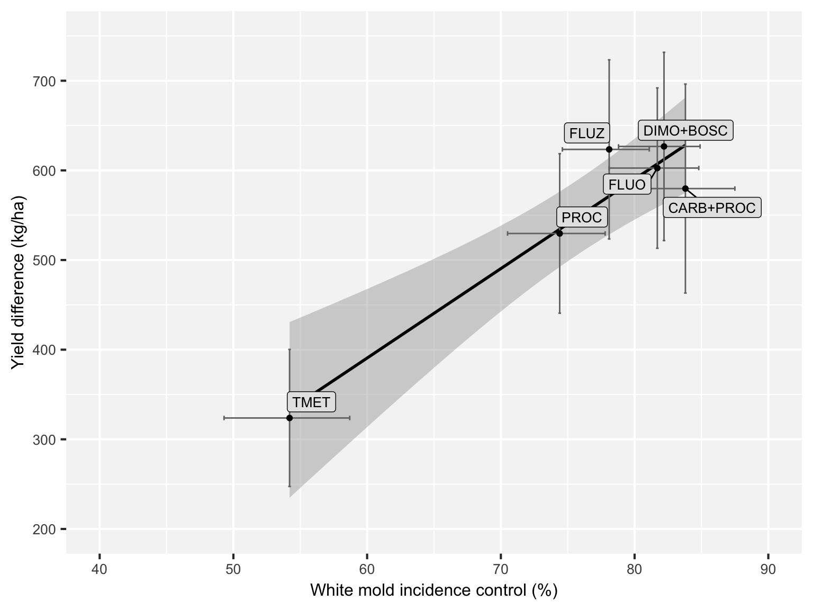

Plots
knitr::opts_chunk$set(fig.width=8, fig.height=6, fig.path='Figures/',
warning=FALSE, message=FALSE)Here we show the scripts that produce the publication-ready plots for the article. There is a hidden script (see the Rmd file) to prepare the data for the plots including variable creation and transformation.
Fig 1 Map
library(maps)
# Get Brazil map info
brazil_map <- map_data("world", "brazil")
# get shape file
library(rgdal)
brazil <- readOGR("data/shape-files-BRA/BRA_adm1.shp", layer = "BRA_adm1")## OGR data source with driver: ESRI Shapefile
## Source: "/Users/emersondelponte/Documents/GitHub/paper-fungicides-whitemold/data/shape-files-BRA/BRA_adm1.shp", layer: "BRA_adm1"
## with 27 features
## It has 16 fieldsmapa <- gsheet2tbl(
"https://docs.google.com/spreadsheets/d/1VLK94nZV9DhYNVEUXFb7aC5BjhJ21FYfLf8crj5m-a8/edit#gid=1595668142",
sheetid = "Map"
)
mapa <- mapa %>%
mutate(
lon = as.numeric(lon),
lat = as.numeric(lat),
inc = as.numeric(inc)
)
library(ggrepel)
mapa <- ggplot(mapa) +
geom_polygon(
data = brazil,
aes(x = long, y = lat, group = group),
fill = "NA", colour = "grey50"
) +
geom_jitter(alpha = 1 / 2, data = mapa, aes(
x = lon, y = lat,
size = inc,
colour = NULL
)) +
coord_fixed() +
theme_minimal() +
theme(legend.position = "top") +
labs(x = "Longitude", y = "Latitude") +
scale_size_continuous(name = "Mean incidence untreated plots (%)") +
geom_label_repel(aes(x = lon, y = lat, size = 7, label = name),
box.padding = unit(0.3, "lines"),
point.padding = unit(0.8, "lines"),
fontface = "bold", segment.size = 0.5, size = 2
) +
coord_map(xlim = -c(60, 40), ylim = -c(34, 10))
mapaggsave("Fig1.png", width = 6, height = 6, dpi = 300)Fig 3 Boxp disease per season
inc_year <- mofo1 %>%
filter(fungicide == "AACHECK") %>%
ggplot(aes(year, inc_check)) +
geom_boxplot(size = 0.5, outlier.shape = NA) +
geom_jitter(width = 0.1, shape = 1, size = 2, color = "gray50") +
labs(x = "Crop Seasons", y = "Incidence (%)") +
theme_grey() +
theme(panel.background = element_rect(fill = "grey96", color = "grey96"), axis.text.x = element_text(angle = 45, hjust = 1)) +
scale_y_continuous(breaks = c(0, 20, 40, 60, 80, 100), limits = c(0, 100))
inc_yearscl_year <- mofo1 %>%
filter(fungicide == "AACHECK") %>%
ggplot(aes(year, scl_check)) +
geom_boxplot(size = 0.5, outlier.shape = NA) +
geom_jitter(width = 0.1, shape = 1, size = 2, color = "gray50") +
labs(x = "Crop Seasons", y = "Sclerotia Mass (g/ha)") +
theme_grey() +
theme(panel.background = element_rect(fill = "grey96", color = "grey96"), axis.text.x = element_text(angle = 45, hjust = 1))
scl_year
library(cowplot)
box_year <- plot_grid(inc_year, scl_year, labels = c("A", "B"), ncol = 2, align = "HV")
box_year
ggsave("Fig3.png", width = 8, height = 4, dpi = 300)Fig 4 Box disease per fungicide
mofo1$fungicide2 <- factor(mofo1$fungicide2, levels = c("CHECK", "CARB+PROC", "DIMO+BOSC", "FLUO", "FLUZ", "PROC", "TMET"))
box_inc <- ggplot(mofo1, aes(fungicide2, inc)) +
geom_boxplot(size = 0.5, outlier.shape = NA) +
geom_jitter(width = 0.1, shape = 1, size = 2, color = "gray50") +
labs(x = "Fungicide", y = "Incidence (%)") +
scale_y_continuous(breaks = c(0, 20, 40, 60, 80, 100), limits = c(0, 100)) +
theme_grey() +
theme(panel.background = element_rect(fill = "grey96", color = "grey96"), axis.text.x = element_text(angle = 45, hjust = 1), legend.position = "none")mofo1$fungicide2 <- factor(mofo1$fungicide2, levels = c("CHECK", "CARB+PROC", "DIMO+BOSC", "FLUO", "FLUZ", "PROC", "TMET"))
box_scl <- ggplot(mofo1, aes(fungicide2, scl)) +
geom_boxplot(size = 0.5, outlier.shape = NA) +
geom_jitter(width = 0.1, shape = 1, size = 2, color = "gray50") +
labs(x = "Fungicide", y = "Sclerotia Mass (g/ha)") +
theme_grey() +
# scale_y_continuous(breaks=c(0, 5000, 10000), limits=c(0,10000))+
theme(panel.background = element_rect(fill = "grey96", color = "grey96"), axis.text.x = element_text(angle = 45, hjust = 1), legend.position = "none")
library(cowplot)
box_inc_scl <- plot_grid(box_inc, box_scl, labels = c("A", "B"), ncol = 2, align = "HV")
box_inc_scl
ggsave("Fig4.png", width = 9, height = 4, dpi = 300)Fig 5 Scatter disease variables
library(ggrepel)
scl_inc <- gsheet2tbl(
"https://docs.google.com/spreadsheets/d/1VLK94nZV9DhYNVEUXFb7aC5BjhJ21FYfLf8crj5m-a8/edit#gid=41911812",
sheetid = "inc_scl"
)
scl_inc <- scl_inc %>%
mutate(
inc = as.numeric(inc),
scl = as.numeric(scl),
inc_inf = as.numeric(inc_inf),
inc_sup = as.numeric(inc_sup),
scl_inf = as.numeric(scl_inf),
scl_sup = as.numeric(scl_sup)
)
library(plyr)
scl_inc$Fungicide <- revalue(scl_inc$Fungicide, c("TIOF" = "TMET"))
detach("package:plyr", unload = TRUE)
set.seed(42)
ggplot(scl_inc, aes(inc, scl)) +
geom_smooth(colour = "black", method = "lm") +
geom_errorbar(aes(ymin = scl_inf, ymax = scl_sup), width = 0.2, size = 0.5, color = "gray45") +
geom_errorbarh(aes(xmin = inc_inf, xmax = inc_sup), height = 0.5, size = 0.5, color = "gray45") +
ylab("Sclerotia mass reduction (%)") +
xlab("White mold incidence reduction (%)") +
scale_y_continuous(breaks = c(20, 30, 40, 50, 60, 70, 80, 90), limits = c(40, 93)) +
scale_x_continuous(breaks = c(20, 30, 40, 50, 60, 70, 80, 90, 100), limits = c(40, 93)) +
geom_label_repel(aes(inc, scl, label = scl_inc$Fungicide),
fill = "grey90", size = 3, color = "black", label.size = 0.30,
box.padding = unit(0.30, "lines")
) +
geom_point(aes(inc, scl)) +
theme_grey(base_size = 16) +
coord_fixed() +
theme(legend.position = "none", axis.text = element_text(size = 10), axis.title = element_text(size = 10), panel.background = element_rect(fill = "grey96", color = "grey96"))
ggsave("Fig5.png", width = 5, height = 4, dpi = 300)Fig 6 Box yield season and fungicide
mofo1$fungicide2 <- factor(mofo1$fungicide2, levels = c("CHECK", "CARB+PROC", "DIMO+BOSC", "FLUO", "FLUZ", "PROC", "TMET"))
box_yld <- ggplot(mofo1, aes(fungicide2, yld)) +
geom_boxplot(size = 0.5, outlier.shape = NA) +
geom_jitter(width = 0.1, shape = 1, size = 2.5, color = "gray50") +
labs(x = "Fungicide", y = "Yield (kg/ha)") +
theme_grey() +
ylim(1000, 5000) +
theme(panel.background = element_rect(fill = "grey96", color = "grey96"), axis.text.x = element_text(angle = 45, hjust = 1), legend.position = "none")
yld_year <- mofo1 %>%
filter(fungicide == "AACHECK") %>%
ggplot(aes(year, yld_check)) +
ylim(1000, 5000) +
geom_boxplot(size = 0.5, outlier.shape = NA) +
geom_jitter(width = 0.1, shape = 1, size = 2.5, color = "gray50") +
labs(x = "Crop Seasons", y = "Yield (Kg/ha)") +
theme_grey() +
theme(panel.background = element_rect(fill = "grey96", color = "grey96"), axis.text.x = element_text(angle = 45, hjust = 1))
library(cowplot)
yld_box <- plot_grid(yld_year, box_yld, labels = c("A", "B"), nrow = 1, align = "H")
yld_boxggsave("Fig6.png", width = 9, height = 4, dpi = 300)Fig 7 Scatter yield x disease
library(cowplot)
library(ggrepel)
library(tidyverse)
inc_yld <- gsheet2tbl(
"https://docs.google.com/spreadsheets/d/1VLK94nZV9DhYNVEUXFb7aC5BjhJ21FYfLf8crj5m-a8/edit#gid=2054312057",
sheetid = "inc_yld"
)
inc_yld <- inc_yld %>%
mutate(
inc = as.numeric(inc),
yld = as.numeric(yld),
inc_inf = as.numeric(inc_inf),
inc_sup = as.numeric(inc_sup),
yld_inf = as.numeric(yld_inf),
yld_sup = as.numeric(yld_sup)
)
library(plyr)
inc_yld$Fungicide <- revalue(inc_yld$Fungicide, c("TIOF" = "TMET"))
detach("package:plyr", unload = TRUE)
set.seed(42)
gr1 <- ggplot(inc_yld, aes(inc, yld)) +
geom_smooth(colour = "black", method = "lm") +
geom_errorbar(aes(ymin = yld_inf, ymax = yld_sup), width = 0.2, size = 0.5, color = "gray45") +
geom_errorbarh(aes(xmin = inc_inf, xmax = inc_sup), height = 5, size = 0.5, color = "gray45") +
ylab("Yield difference (kg/ha)") +
xlab("White mold incidence control (%)") +
scale_y_continuous(breaks = c(200, 300, 400, 500, 600, 700, 800), limits = c(200, 750)) +
scale_x_continuous(breaks = c(20, 30, 40, 50, 60, 70, 80, 90), limits = c(40, 90)) +
geom_label_repel(aes(inc, yld, label = inc_yld$Fungicide),
fill = "grey90",
size = 3.5, color = "black", label.size = 0.25,
box.padding = unit(0.30, "lines")
) +
geom_point(aes(inc, yld)) +
theme_grey(base_size = 16) +
theme(axis.text = element_text(size = 10), panel.background = element_rect(fill = "grey96", color = "grey96"), axis.title = element_text(size = 12), legend.position = "none")
gr1
scl_yld <- gsheet2tbl(
"https://docs.google.com/spreadsheets/d/1VLK94nZV9DhYNVEUXFb7aC5BjhJ21FYfLf8crj5m-a8/edit#gid=1324985291",
sheetid = "scl_yld"
)
scl_yld <- scl_yld %>%
mutate(
yld = as.numeric(yld),
scl = as.numeric(scl),
yld_inf = as.numeric(yld_inf),
yld_sup = as.numeric(yld_sup),
scl_inf = as.numeric(scl_inf),
scl_sup = as.numeric(scl_sup)
)
library(plyr)
scl_yld$Fungicide <- revalue(scl_yld$Fungicide, c("TIOF" = "TMET"))
detach("package:plyr", unload = TRUE)
set.seed(42)
gr2 <- ggplot(scl_yld, aes(scl, yld)) +
geom_smooth(colour = "black", method = "lm") +
geom_errorbarh(aes(xmin = scl_inf, xmax = scl_sup), height = 5, size = 0.5, color = "gray45") +
geom_errorbar(aes(ymin = yld_inf, ymax = yld_sup), width = 0.2, size = 0.5, color = "gray45") +
ylab("Yield difference (kg/ha)") +
xlab("Sclerotia control (%)") +
scale_y_continuous(breaks = c(200, 300, 400, 500, 600, 700, 800), limits = c(200, 750)) +
scale_x_continuous(breaks = c(40, 50, 60, 70, 80, 90, 100), limits = c(40, 95)) +
geom_label_repel(aes(scl, yld, label = scl_yld$Fungicide),
fill = "grey90", size = 3.5, color = "black", label.size = 0.50,
box.padding = unit(0.30, "lines")
) +
geom_point(aes(scl, yld)) +
theme_grey(base_size = 16) +
theme(axis.text = element_text(size = 10), axis.title = element_text(size = 12), legend.position = "none", panel.background = element_rect(fill = "grey96", color = "grey96"))
gr2library(cowplot)
efficacy_plot <- plot_grid(gr1, gr2, labels = c("A", "B"), ncol = 2, align = "HV")
efficacy_plot
ggsave("Fig7.png", width = 9, height = 5, dpi = 300)Fig 8 tile risk categories
mofo <- gsheet2tbl(
"https://docs.google.com/spreadsheets/d/1VLK94nZV9DhYNVEUXFb7aC5BjhJ21FYfLf8crj5m-a8/edit#gid=2085223602",
sheetid = "Probability"
)
mofo <- mofo %>%
mutate(
tau = as.numeric(tau),
D = as.numeric(D)
)
library(plyr)
mofo$fungicide <- revalue(mofo$fungicide, c("TIOF" = "TMET"))
detach("package:plyr", unload = TRUE)
prob <- function(C, P, tau, D) {
profit <- (D - (C / (P / 1000))) / sqrt(tau) # loss
prob_gain <- pnorm(profit)
prob_gain
}
for (i in 1:length(mofo$C)) {
mofo$breacking_even[i] <- prob(C = mofo$C[i], D = mofo$D[i], tau = mofo$tau[i], P = mofo$P[i]) * 100
}
library(viridis)
library(tidyverse)
library(ggthemes)
dat <- mofo %>%
mutate(
breacking_even = as.numeric(breacking_even),
breacking_even = round(breacking_even, 1)
)
dat %>%
mutate(breacking_even1 = case_when(
breacking_even >= 75 ~ "p \u2264 75 ",
breacking_even < 75 & breacking_even >= 65 ~ "65 \u2264 p < 75 ",
breacking_even < 65 & breacking_even >= 55 ~ "55 \u2264 p < 65 ",
breacking_even < 55 & breacking_even >= 45 ~ "45 \u2264 p < 55 ",
breacking_even < 45 ~ "0 \u2264 p < 45 "
)) %>%
ggplot(aes(factor(C), factor(P), z = breacking_even1, fill = breacking_even1, label = breacking_even1)) +
geom_tile(color = "white", size = 0.5) +
scale_fill_viridis(discrete = T, option = "D", begin = 0, end = 1, name = "Probability of breaking-even (%)") +
scale_color_gradient(high = "white", low = "white") +
labs(x = "Fungicide + application cost (US$/ha)", y = "Soybean price (US$/ton) ", fill = "") +
# facet_wrap(~fungicide, ncol = 2, scales = "free", dir = "h")+
theme_minimal() +
facet_grid(class ~ fungicide, scales = "free") +
theme(text = element_text(size = 12), legend.justification = "center", strip.text.x = element_text(size = 12, face = "bold"), strip.text.y = element_text(size = 12, face = "bold"), panel.grid.minor = element_line(colour = "white"), panel.grid.major = element_line(colour = "white"), legend.position = "bottom")
ggsave("Fig8.png", width = 8, height = 7, dpi = 300)Fig 1 Supplement
## Log of the Effect-sizes
mofo1 <- mofo1 %>%
mutate(
log_inc = log(inc),
log_scl = log(scl),
log_yld = log(yld)
)
hist_log_inc <- ggplot(mofo1, aes(log_inc)) + geom_histogram(binwidth = 0.5, color = "black") + xlab("log(Incidence)")
hist_inc <- ggplot(mofo1, aes(inc)) + geom_histogram(binwidth = 6, color = "black") + xlab("Incidence (%)")
hist_log_scl <- ggplot(mofo1, aes(log_scl)) + geom_histogram(binwidth = 0.5, color = "black") + xlab("log(Sclerotia Mass)")
hist_scl <- ggplot(mofo1, aes(scl)) + geom_histogram(binwidth = 1500, color = "black") + xlab("Sclerotia Mass (g/ha)")
hist_log_yld <- ggplot(mofo1, aes(log_yld)) + geom_histogram(binwidth = 0.06, color = "black") + xlab("log(Yield)")
hist_yld <- ggplot(mofo1, aes(yld)) + geom_histogram(binwidth = 200, color = "black") + xlab("Yield (Kg/ha)")
library(cowplot)
hist_plot <- plot_grid(hist_inc, hist_log_inc, hist_scl, hist_log_scl, hist_yld, labels = c("A", "D", "B", "E", "C"), nrow = 3, align = "V")
hist_plot
ggsave("Fig1_supp.png", width = 8, height = 11, dpi = 300)